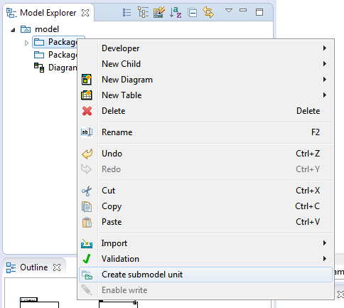
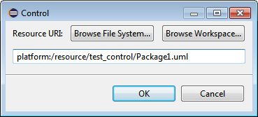
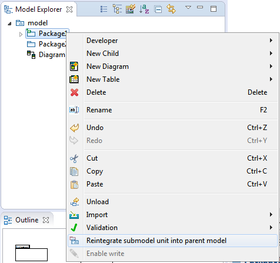

In this page we will show the Papyrus capabilities to create and reintegrate submodels, also known as control mode.
As a model grows large in number of elements, it is convenient to split them into different physical resources i.e. files. Papyrus provides a feature to perform this splitting in a seamless fashion, allowing to move parts of the model to another resource. We call this create a submodel. This is specially helpful working in collaborative environments, since the Team features can be applied individually to the different resources i.e. make changes and commit them in only one part of the model.
To create a submodel, right click on the element which you wish to move to a different resource (a Package in the common case) and select Create submodel unit 
The following dialog appears. Select the desired location for the new resource and click OK.

Important: The selected element has not been moved just yet. The model editor will be dirty i.e. there will be an asterisk next to its name in the tab. In order to complete the submodel creation, you need to save your model.
The new resource is created in the chosen location with the chosen file name, whilst a green decorator is shown in the model explorer view of the parent model to indicate this element is in a submodel.
To reintegrate a submodel into the main model, open the parent model and right click on the submodel element in the model explorer (recognizable with the green decorator). 
The submodel is reintegrated into the main model resource, and the submodel resource is deleted.